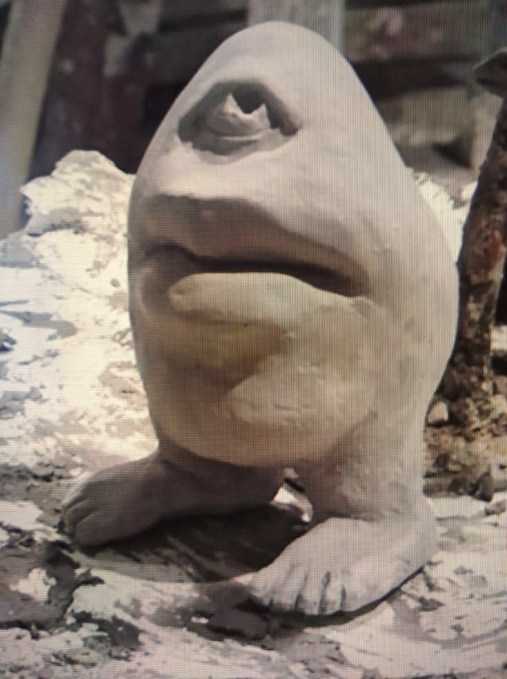

[ COLIRALDO (Seu Colirêncio) ]
O ex-presidente do Uzbequistão, guarda-costas de Gandhi em Manaus e arquiteto da mansão IDATANA.
QUE DIAJOS ELE É?
pode parecer inonfensivo, mas ele foi o grande amigo de julio césar, e tmb, foi o provavel tio do provavel filho de julio césar, o brutus, mas também, foi o melhor e grande amigo de Mahatma Ghandi, o pai da índia, eles se conheceram na Universidade University College London, em direitos, em 1888, na primeira aula deles, eles se conheceram de forma relativamente positiva, discutiam assuntos muito complexo para minha cabeça e de momentos engraçados do contidiano do Ghandi e de Coliraldo na índia, ele foi o grande braço-direito de Ghandi na indepêdencia da Índia, antigamente chama de raj britânico
[A ENCARADA SUMPREMA PARA ICHINOMIYA HIROHITO]
1945 — Pouca gente sabe mas... o Coliraldo foi o responsavel pela a rendição de Hirohito do japão imperial, o Coliraldo intervém durante na segunda guerra mundial (WW2), e ele forçou á hirohito, encarar ele fixamente por longos 14 horas seguidas e concecultivas, encarando o único olho do coliraldo, hirohito sentiu tanta pressão naquele olho que decidiu se render.